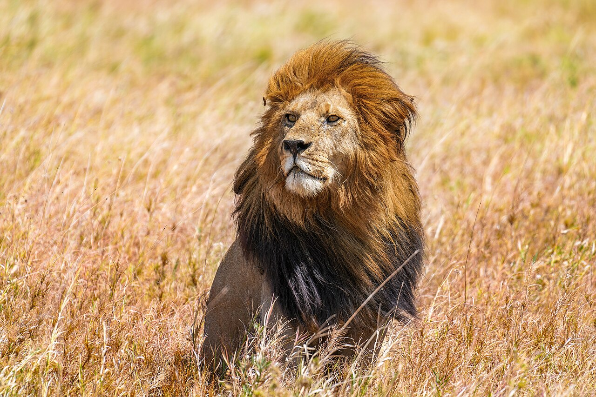

El león es un gran mamífero carnívoro y el segundo felino más grande del mundo, solo superado por el tigre, con machos que pesan entre 180 y 190 kg y hembras de entre 120 y 182 kg. Los machos poseen una melena densa que va del rubio al negro para protegerse en peleas y atraer hembras, mientras que toda la especie destaca por una vista nocturna superior a la humana, garras retráctiles y un potente rugido que se escucha hasta a 9 kilómetros. Son los únicos felinos que viven en grupos sociales llamados manadas, compuestas por hembras emparentadas, sus crías y machos dominantes, donde las leonas cazan en equipo a grandes herbívoros por la noche. Además, son animales perezosos que descansan hasta 20 horas al día y habitan principalmente en la sabana africana, además de una población protegida en la India, por lo que realmente no viven en selvas densas.